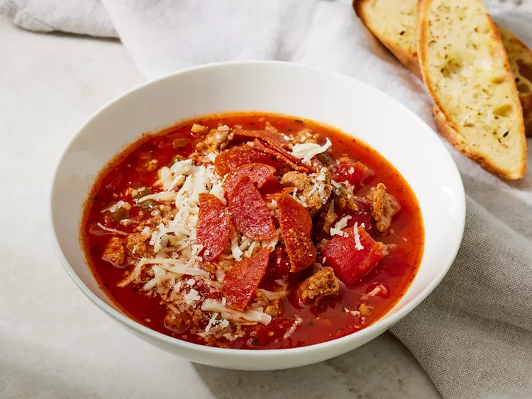

Pizza Soup

Recipe Description
Ingredients
These are the Ingredients you'll need to make this pizza soup recipe:
- 1 (3 1/2 ounce) package sliced pepperoni
- 1 pound bulk Italian sausage
- 1 cup chopped onion
- 1 green ball pepper, seeded and chopped
- 1 (28 ounce) can diced tomatoes, undrained
- 1 (15-ounce) can tomato sauce
- 2 cups beef broth
- 2 teaspoons dried Italian seasoning, crushed
- 1 cup shredded mozarella cheese
- 1/4 cup freshly grated Parmesan cheese
Directions
- Gather all ingredients
- Cut pepperoni slices in half
- COok pepperoni in a 6-quart soup pot over medium-high heat untill pepperoni starts to crisp, stirring occasionally, about 5 minutes.
- Remove pepperoni from pan and drain on paper towels. Set aside.
- In the same pot, cook sausage over medium-high heat untill cooked through, about 5 minutes.
- Add onion and peppers; cook untill crisp-tender, stirring occasionaly, about 5 minutes.
- Add tomatoes, tomato sauce, beef broth and Italian seasoning to the pot. Bring mixture to boiling over medium high heat. Reduce heat and simmer, covered, for 10 minutes, stirring occasionally.
- Top each serving with crispy pepperoni, mozzarella, and Parmesen cheese.